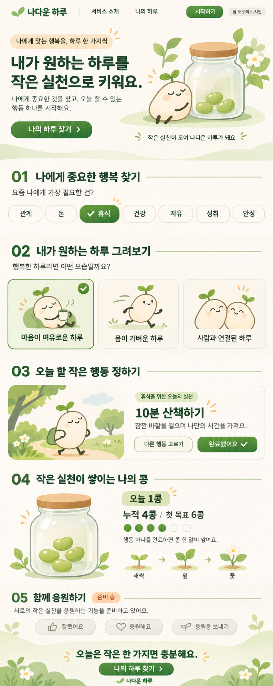

작은 실천이 모여 나다운 하루가 돼요
나에게 중요한 행복 찾기
요즘 나에게 가장 필요한 건?
내가 원하는 하루 그려보기
행복한 하루라면 어떤 모습일까요?
오늘 할 작은 행동 정하기
휴식을 위한 오늘의 실천
10분 산책하기
잠깐 바깥을 걸으며 나만의 시간을 가져요.
작은 행동 하나면 충분해요. 하루에 콩 한 알씩!
작은 실천이 쌓이는 나의 콩
오늘의 작은 실천을 담아봐요
오늘 0콩
누적 0콩 / 첫 목표 6콩
행동 하나를 완료하면 콩 한 알이 쌓여요.
새싹
잎
꽃
작은 시작이 자라날 준비를 하고 있어요.
함께 응원하기
준비 중서로의 작은 실천을 응원하는 기능을 준비하고 있어요.